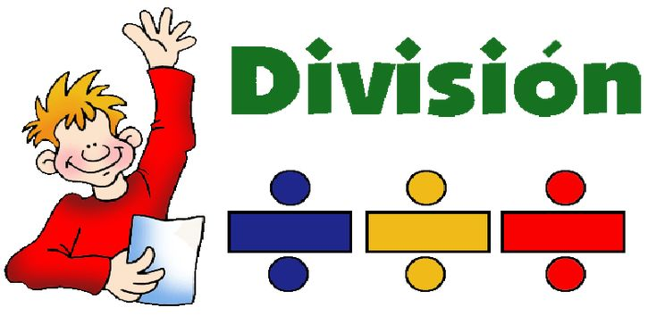

Matemáticas Básicas: DivisiónConceptos, algoritmo de la división larga, ejemplos y ejercicios |
|||||||||||||||||
| Inicio | Números | Suma | Resta | Multiplicación | División | Trigonometria | Geometría | Álgebra | Contacto | |||||||||||||||||
Cómo usar esta página
Consejos
CuriosidadLa división larga que se enseña hoy se formalizó con el desarrollo del sistema posicional; antes se usaban tablas y métodos basados en restas repetidas. |
¿Qué es la división?La división es la operación que reparte una cantidad (dividendo) en partes iguales determinadas por el divisor. Se representa como dividendo ÷ divisor = cociente (con resto). Terminología
Regla importanteNo se puede dividir entre cero. (Dividir por 0 es indefinido) Algoritmo de la división larga (pasos)
Ejemplo paso a pasoDividir 154 entre 7:
22
------
7 | 154
14
----
14
14
----
0
7 entra 2 veces en 15 → 2 en cociente; 2×7=14; 15−14=1; bajar 4 → 14; 7 entra 2 veces en 14 → resto 0. Resultado: 154 ÷ 7 = 22. División con restoEjemplo: 17 ÷ 5 → 5 entra 3 veces (3×5=15), resto 2. Escribimos 3 con resto 2 o 3,4 si continuamos con decimales (2.0 → 20, 20 ÷ 5 = 4 → 3.4 exacto). División con decimalesSi quieres un cociente decimal, agrega ceros al dividendo y continúa dividiendo como con enteros. División de números negativosEl cociente será negativo si exactamente uno de los números (dividendo o divisor) es negativo; será positivo si ambos tienen el mismo signo. Propiedades y relaciones
Errores comunes
Tabla de ejemplos
EjerciciosBásicos
Intermedios
Soluciones
|
||||||||||||||||
|
© 2025 Matemáticas Básicas | Proyecto educativo en HTML puro |
|||||||||||||||||